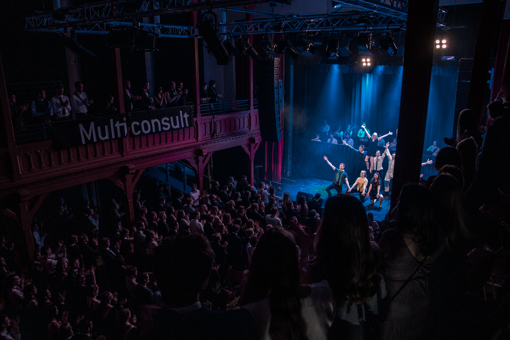

Om revyen
EMIL- og Smørekoppenrevyen er, som navnet tilsier, et revysamarbeid av og med studenter fra Energi og miljø og Produktutvikling og Produksjon. Som alle revyer har vi mange undergrupper og alle kan finne noe de liker.
RevyCom ble stiftet i 1999, og har hvert år siden 2000 satt opp en ny revy hver vår. I 2017 ble revyen formelt sett en egen, uavhengig organisasjon; men den er fremdeles tett knyttet til både EMIL og Smørekoppen, og er åpen for alle medlemmer av linjeforeningene.
Gjennom årene har revyen stadig vekk byttet scene. Revyen har blitt satt opp rundt om på Gløshaugen, på Klubben på Studentersamfundet, i Verkstedhallen på Svartlamon. I 2017 flyttet vi oss nok en gang over til Samfundet: denne gang til Storsalen. Dette ble en stor suksess, og revyen kan nå skryte av å ha fylt Storsalen! Revyen i 2018 ble holdt på Byscenen og etter revyen 2020 har det blitt en tradisjon!
